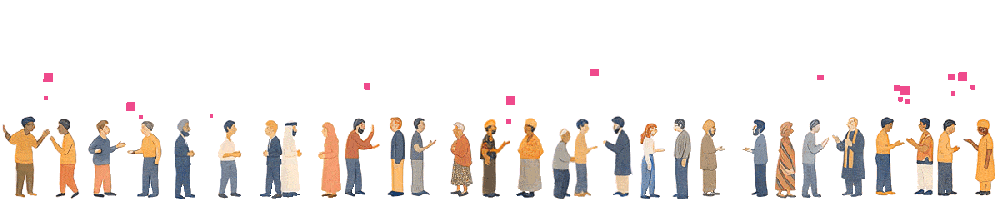

Welcome to State • United Kingdom
Welcome to State • United Kingdom
Master Your Political Power
State arms you with the right information to understand your political potential, the access to reach the right decision-makers, and the collective force to really change what matters to you.

Summoning the oracle
I am the Oracle. 🙏
Tell me what matters to you, and I will guide you to the right place.
Tell me what matters to you, and I will guide you to the right place.
You
Trending with others